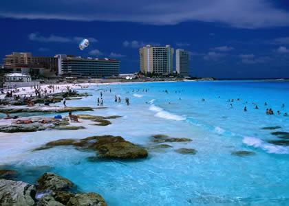

Pasa tus vacaciones en la paradisíaca costa de Playa Bávaro, en la parte este de la República Dominicana Disfruta de unas maravillosas vacaciones en la zona de Playa Bávaro, cuya costa es una interminable playa de arena fina y blanca y aguas limpias y azules. Parte de lo que se conoce como la Costa del Coco ha sido pensada, principalmente, para cubrir todas las necesidades y caprichos de los visitantes, por lo que lo único que tienen que hacer los turistas aquí es relajarse.
El Cortecito es la playa pública de la zona, y desde donde se puede viajar a otros lugares en un bote-taxi. Hay diferentes destinos dependiendo de los intereses de cada uno. Para los buceadores, la playa Cabeza de Toro es ideal debido a la piscina natural ubicada allí llamada Marinarium. Para los más aventureros, se organizan excursiones en todoterreno a la playa de Cabo Engaño, o a la aún más inaccesible Macao, a la que solo se llega en un tour en quad. En la playa El Cortecito, los lancheros ofrecen paseos para pescar o bucear si no se ha contratado antes en el hotel, y para los deportistas, el Catalonia Resort cuenta con un campo de golf de nueve hoyos. Además, salen excursiones desde allí hacia la isla Catalina o la Isla Saona. Si te gusta el buceo o el submarinismo, no dejes de ir a la ruta de los museos submarinos repartidos por la costa sur de la isla.
Cobá es un yacimiento arqueológico de la cultura maya precolombina, localizado en el sureste de México, en el territorio que hoy es el estado de Quintana Roo, unos noventa kilómetros al este de Chichén Itzá y unos cuarenta al noroeste de Tulum. El posible significado de Cobá podría ser de cob, ‘lo que tiene humedad’, o musgo y á, o há, ‘agua’, es decir ‘agua con musgo’, o ‘humedad de agua’. Otra posibilidad que no se descarta, es que signifique ‘agua turbia’, por la proximidad a unos pequeños lagos con un color muy turbio
En su apogeo, tuvo una población de unos 50 000 habitantes y una extensión de ochenta kilómetros cuadrados. La mayor parte de la ciudad fue construida a mediados del periodo Clásico de la civilización maya, entre los años 500 y 900 de nuestra era y poseía varios templos, entre los cuales sobrevive la pirámide del Nohoch Mul, de 42 metros de altura. La mayor parte de las inscripciones datan del siglo VII y numerosas evidencias indican que la construcción y reparación de los edificios continuó, hasta el siglo XIV. Las investigaciones realizadas a la fecha, permiten saber que Cobá tiene una larga historia de ocupación prehispánica, que habría iniciado hacia 200 o 100 a. C., cuando aquí existió un asentamiento de plataformas bajas y construcciones de madera y palma, de las que no queda más evidencia que algunos fragmentos de cerámica. Es a partir de 100 d. C., cuando el área de Cobá experimenta un notable crecimiento demográfico, social y político, que habrían de llevarla a convertirse en una de las ciudades más grandes y poderosas del norte de Yucatán.
Hago del viaje una experiencia única. Planifico a medida mi viaje para conocer al máximo el destino escogido. Huyo de los tours de las agencias y del todo incluido en busca de la exclusividad. Dispongo de presupuesto y me dejo asesorar por expertos. Mis destinos son lejanos y diferentes y, muchas veces, visito varios países a la vez.